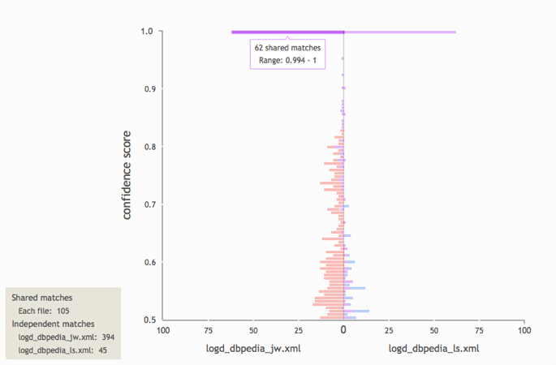

|
Please select a file to import. Files must be in Alignment format. Sample files can be downloaded here and here. You can upload multiple files simultaneously (however there is a 5 file limit). |
This bar chart enables the user to
view and compare the quantity of matches and confidence scores
between multiple output files.
Shows the ratio of shared matches between
the selected files to independent matches occurring in each file. A
typical use-case would be seeing how changing the similarity metric
(e.g., from Jaro-Winkler to Levenshtein) could affect the output.

This scatterplot shows how the confidence
scores of matches that occur in both jobs have changed between runs.
Points along the diagonal indicate that the confidence scores of
shared matches have not changed between runs. Clusters that appear
outside of the diagonal demonstrate whether scores tend to increase
or decrease between runs.
|
|
First select one or two files (click on the file names above), then click 'Render chart' to view their data in the canvas.
|
Please wait while data is being prepared...
Oops... it seems something went wrong :-(